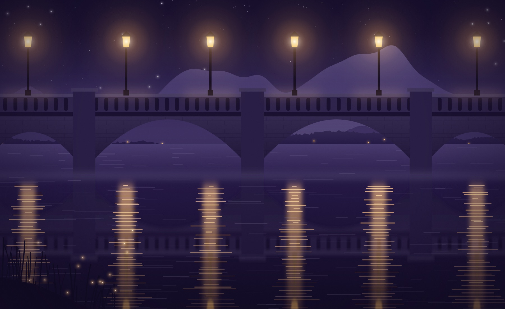

01 · What it gives
Paychecks.
Jobs for neighbors, and first jobs for their kids.

02 · What it gives
Sponsorships.
The jersey says your name.

03 · What it gives
A place.
Somewhere to meet, wait, celebrate.

04 · What it gives
A reason to stay.
Towns keep people when people have somewhere to go.